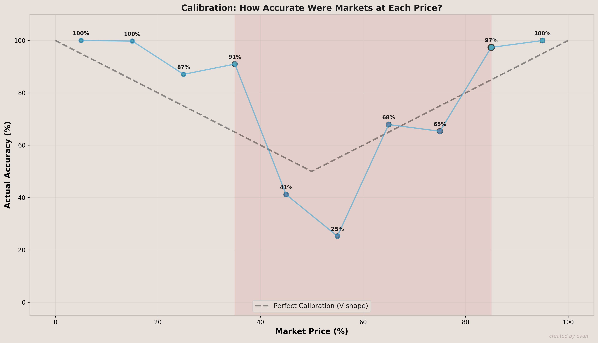
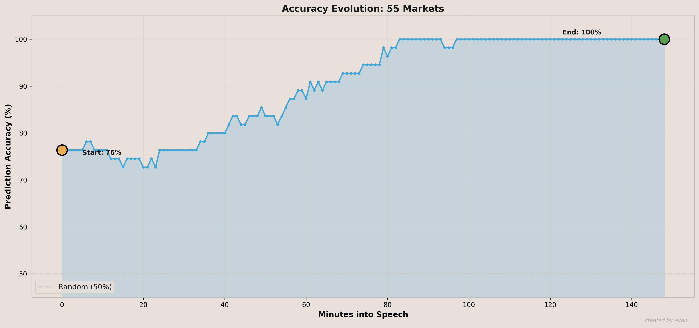
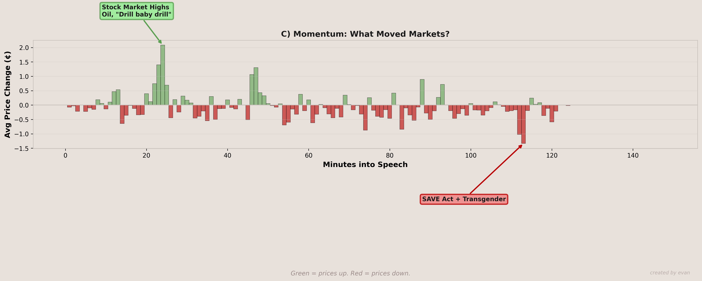
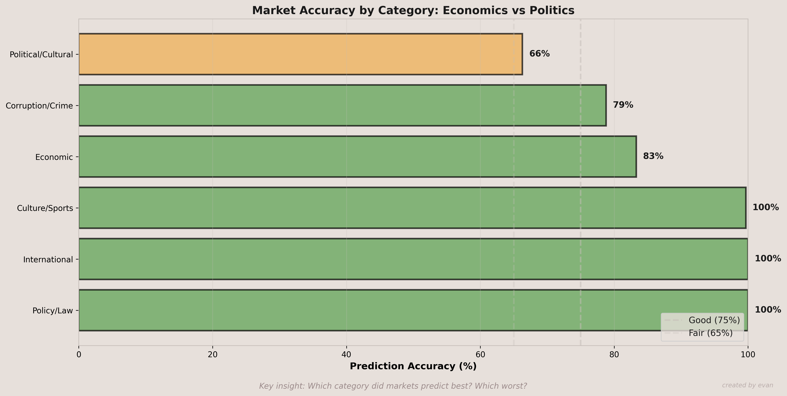

Tracking Kalshi during Trump's State of the Union Address
A quick read on how well a bundle of speech-related mention markets held up once the event actually happened. The broad takeaway: the edge markets were strong, while the middle got sloppy.
What drew me to this one is that prediction-market commentary often stops at “the market was right” or “the market was wrong.” That is too blunt. I wanted the more useful question: where was the basket accurate, where did it wobble, and what kinds of contracts moved the tape during the speech?

The strongest calibration shows up at the edges. The middle buckets were where the market got least reliable.
Contracts priced around 5% to 35% and 85% to 95% behaved the way you would want. The trouble zone was the middle. The 45% bucket only finished at 41% accuracy, and the 55% bucket only finished at 25%.

That does not mean prediction markets fail. It means they were more useful here as confidence-ranking tools than as perfectly calibrated pricing machines in every band.
The momentum chart is useful because it shows that not every minute mattered equally. A handful of speech lines moved the basket hard. The strongest positive move came around the “Drill Baby Drill” moment, while one of the sharper negative swings came around the SAVE Act / transgender cluster.

The event basket looked diversified on paper, but the actual price action still clustered around a small set of headline lines.
Economic markets finished at 83% accuracy, while political and cultural markets finished at 66%. That gap feels intuitive. The economic references were more concrete and easier to confirm in real time; the political and cultural language carried more interpretation risk.

The category split reinforces the same idea: the more concrete the underlying reference, the more reliable the pricing looked.